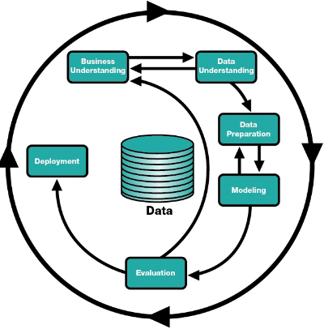
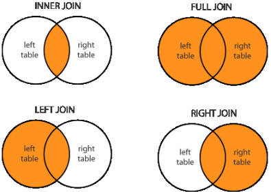
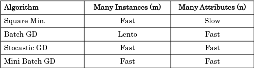
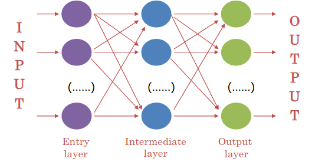
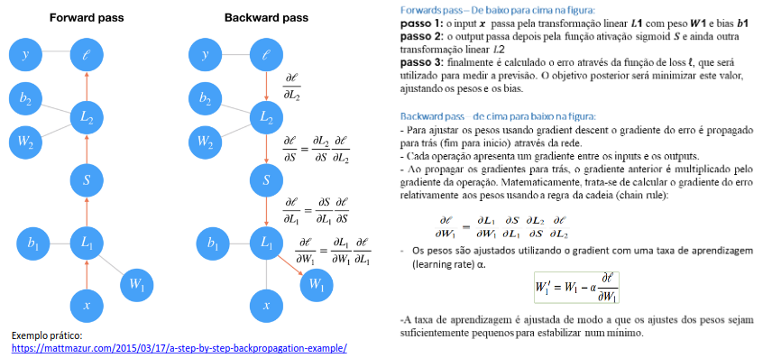

Teórica 01
Programa semelhante ao de DAA, no entanto, a prática é feita em Jupyter.
Avaliação
- Prova Escrita (40%)
- Duração de 1 hora;
- Nota mínima de 8 valores;
- À base de correção de algoritmos e frases para completar.
- Trabalho de Grupo (60%)
- Com avaliação por pares;
- Na ferramenta que quisermos;
- Nota mínima de 10 valores.
As aulas práticas têm presenças e precisam que se tenha computador com Jupyter.
Teórica 02
Aprendizagem Automática (Machine Learning) vs Ciência de Dados (Data Science)
Machine Learning
- Utiliza dados;
- Tem como produto final um artefacto de software;
- Quem trabalha em ML são Data Engineer.
Data Science
- Analisa conjuntos de dados;
- Tem como produto final apresentações e relatórios;
- Quem trabalha em DS são Data Scientists.
Aprendizagem
- Ganhar capacidades e conhecimentos;
- Criar uma linha de raciocínio para resolver problemas;
- Memorizar;
- Reconhecer erros;
- Corrigir erros;
- Imitar comportamentos.
Aprendizagem Automática
Capacidade de aprender de modo autónomo e independente.
Os algoritmos de machine learning são algoritmos orientados aos dados.
Aprendizagem Simbólica vs Aprendizagem Não Simbólica
Aprendizagem Simbólica
- É capaz de explicar as suas decisões;
- Não é capaz de dar resposta a alguns problemas, pois as regras e o conhecimento têm de ser codificados à mão;
- Está muito presa ao mundo académico e aos laboratórios universitários.
- Exemplos: Baseado em Casos, Árvores de Decisão, etc...
Aprendizagem Não Simbólica
- Não é capaz de explicar as suas decisões;
- Apresenta melhores resultados que a AS;
- É, em geral, menos aceitável em decisões de alto risco.
- Exemplos: Redes Neuronais Artificiais, Algoritmos Genéticos e Evolucionários, etc...
Aprendizagem Supervisionada
- Aprende com dados para os quais já sabe a resposta correta;
- A grande maioria dos algoritmos de ML utiliza este tipo de aprendizagem;
- Normalmente, são divididos em 2 categorias:
- Classificação: Apresenta os resultados em classes;
- Regressão: Apresenta resultados em forma contínua.
Aprendizagem Não Supervisionada
- Aprende com dados para os quais não se sabe a resposta certa;
- Tem como objetivo modelar a estrutura ou a distribuição dos dados do problema.
- Divide-se em 3 categorias:
- Segmentação (clustering): Organização dos dados em grupos coerentes;
- Redução (reduction): Reduzir o número de características ou decompor o conjunto de dados em múltiplos componentes;
- Associação: Procura regras que associem o comportamento demonstrado pelos dados.
Aprendizagem por Reforço
- Utilizam técnicas de auto-alimentação de sinais com a noção de recompensa/penalização;
- Tem capacidade crítica sobre os próprios resultados produzidos pelo algoritmo;
- 2 categorias:
- Q-Learning: Assume que se está a seguir uma política ótima e utiliza-a para atualização dos valores das ações;
- SARSA: Considera a política de controlo que está a ser seguida e atualiza o valor das ações.
Metodologias
Existem duas grandes metodologias:
- CRISP-DM;
- SEMMA.
Motivos para utilizar
- Permite que os projetos sejam replicados;
- Apoia no planeamento e gestão do projeto;
- Incentiva as melhores práticas e ajuda a obter os melhores resultados.
SEMMA
Dividido em diversas etapas que funcionam de forma circular:
- Sample: Recolhe uma parte representativa dos dados;
- Explore: Exploração e análise de dados;
- Modify: Engenharia e transformação de features;
- Model: Conceção do modelo;
- Assess: Avaliação do modelo.
CRISP-DM

Teórica 03
Exploração e Preparação de Dados
Problemas:
- Valores em falta;
- Informação em falta porque não foi coletada ou é informação sensível;
- Atributos que não são aplicáveis para todos os elementos.
- Registos Duplicados;
- Os mesmos dados (ou dados semelhantes) colecionados em fontes diferentes
- Ruído;
- Modificação dos registos originais (dados corrompidos ou distorcidos) devido a limitações técnicas, erros de sensores ou erro humano.
- Outliers.
- A ponto nos dados que difere de forma significativa das outras observações.
Porquê Preparar os Dados?
- Compreender os dados e as suas características;
- Avaliar a qualidade dos dados;
- Encontrar padrões e informações relevantes.
Como Preparar os Dados?
- Tendência Central: média, moda, mediana...
- Dispersão Estatística: variância, desvio padrão, distância interquartil...
- Distribuição Probabilística: gaussiana, uniforme, exponencial...
- Correlação/Dependência: entre pares de características, com dependência de características...
- Visualização de Dados: tabelas, gráficos, boxplots, scatter plots, histogramas...
Matrizes de Correlação

- Se a correlação entre atributos for alta \( \rightarrow \) não temos de ter ambos os atributos no modelo;
- Se a correlação com a variável que pretendemos estudar for alta \( \rightarrow \) devemos colocar a variável com alta correlação no modelo.
Preparação de Dados
Prearação Básica
- O join é uma operação que nos permite combinar dados de diferentes tabelas de forma diferente:

- As seguintes técnicas podem ser utilizados:
- Reunião/Interseção de colunas;
- Concatenação;
- Sorters;
- Filtros (de coluna, de linha, nominais e baseados em regras, etc...);
- Agregações básicas (contagens, únicas, média/soma, etc...)
Preparação Avançada
Como?
- Feature Scaling;
- Deteção de Outliers;
- Feature Selection;
- Tratamento de Missing Values;
- Discretização de Valores Nominais;
- Binning;
- Feature Engineering.
Feature Scaling
- Útil para casos e que a escala entre features é muito diferente;
- Normaliza os atributos de forma a reduzir a diferença entre atributos;
- Técnicas:
- Standardização: média de 0 e desvio padrão de 1;
- deve utilizar-se quando a distribuição segue uma curva normal (em forma de sino).
- Normalização: mete todos os valores entre 0 e 1 ou -1 e 1.
- nos outros casos.
- Standardização: média de 0 e desvio padrão de 1;
NOTAS
- Em geral, a standardização produz um melhor resultado;
- Não faz sentido normalizar ou standardizar a variável resultado (também chamada variável dependente ou label).
Deteção de Outliers
Métodos:
- Estratégia Baseada em Estatísticas: Z-Score, Box Plots, ...
- Estratégia Baseada em Conhecimento: Baseada no conhecimento
- Estratégia Baseada em Modelos: Utiliza modelos como one-class SVMs, isolation forests, clustering, ...
Dilema: Drop ou Cap?
- Geralmente, depende do tamanho do dataset:
- Se for muito grande: Drop;
- Caso contrário: Cap.
Feature Selection
- Reduz o número de atributos que o modelo terá de estudar;
- Geralmente, melhora o desempenho e diminui a complexidade;
- O que remover?
- Atributos com elevada % de missing values;
- Teste do chi-square para ver dependências;
- Atributos com baixa variância;
- Atributos muito distorcidos;
- Atributos com grande correlação entre eles.
- Técnicas:
- PCA (Principal Component Analysis);
- Técnica para reduzir a dimensão do espaço de atributos. O objetivo é reduzir o número de atributos sem perder muita informação. Uma utilização popular é a visualização de dados de grandes dimensões;
- Wrapper Methods:
- Utiliza um algoritmo de ML para selecionar os atributos mais importantes. Seleciona um conjunto de atributos como um problema de pesquisa, prepara diferentes combinações, avalia-as e compara-as. Mede a "utilidade" dos atributos baseando no classificador de performance.
- Embedded Methods: Algoritmos que já têm métodos de seleção built-in.
- PCA (Principal Component Analysis);
Missing Values
Inicialmente, analisa cada atributo quanto ao número e percentagem de missing values e com base nisso decide o que fazer:
- Remover;
- Substituir pela média;
- Interpolar o valor;
- Mascarar o valor;
- ...
Discretizção de Valores Nominais
Dados categóricos, muitas vezes denominados dados nominais, são variáveis que contêm uma etiqueta associada ao invés de um valor numérico. Isto pode não ser desejável, então existem diverso métodos para passar as etiquetas para valores numéricos:
- One-Hot Encoding:

- Label Encoding:

- Binary Encoding:
- Semelhante ao Label Encoding, mas com binário.
- Permite uma noção mais fácil de ordem.
- Semelhante ao Label Encoding, mas com binário.
Binning (Discretização)
- Grupos numéricos de dados divididos em intervalos.
- Isto torna o modelo mais robusto e evita o overfitting;
- Penaliza a performance do modelo, visto que, sempre que se cria um intervalo sacrifica-se informação.
Feature Engineering
- Cria atributos a partir de outros atributos existentes;
- Tem por objetivo a melhoria da performance dos modelos de ML.
Teórica 04
Aprendizagem Supervisionada - Regressão Linear e Logística
Modelos Lineares
- Caracterizadas pela simplicidade de cálculos e análises;
- Linearidade é definida nos termos de funções com as seguintes propriedades:
- \( f(x+y)=f(x)+f(y) \);
- \( f(ax)=af(x) \).
- Usada para classificação (seperação entre classes) e regressão;
- Não resolve problemas não-lineares.
Regressão Linear
Tenciona prever o valor de saída \( Y \) baseado na variável de entrada \( X \).
- Enquandra uma linha reta num conjunto de dados de observações;
- Utiliza esta linha para prever valores não observados.
Modelos de Regressão Linear
Representa a relação entre variáveis de entrada \( x_1,..., x_n \) e uma variável de saída \( y \).
Previsão do modelo (para o i-ésimo modelo):
-
\( n \rightarrow \) número de atributos;
-
\( \Theta \rightarrow \) parâmetros do modelo.
\[ ŷ_{(i)} = h_{\Theta}(x_{1}^{(i)},...,x_{n}^{(i)}) \] -
Como funciona?
- Geralmente, utiliza uma função de "Custo por Erro/Perda" e minimizar o seu valor (minimizar o erro quadrado entre cada ponto da linha).
-
Função do custo por erro/perda: MSE (means square error)
-
Objetivo: identificar os parâmetros do modelo de forma a minimizar o valor de J.
Múltipla Regressão Linear
- Utilizada para determinar o efeito do número de variáveis independentes (\( x_1, x_2, ..., x_n \)) numa única variável dependente (\( y \)).
Regressão Logística
- Variável dependente discreta: problema de classificação;
- Utiliza modelos de regressão para classificação binária através da interpretação de modelos de output de forma a extraír a classe.
- O modelo é dado pela aplicação da sigmoid à função de regressão linear.
Função Sigmoid
- Recebe qualquer valor e coloca o seu output entre 0 e 1;
- Isto provoca uma probabilidade entre 0 e 1 de permanecer a uma classe;
- Podemos definir um ponto de threshold em 0.5, definindo:
- Baseado na probabilidade, é assigned a classe;
- Resultados previstos abaixo do threshold vão para a classe 0;
- Resultados previstos acima do threshold vão para a classe 1.
Múltiplas Classes
- Pode ser aplicada para mais do que 2 classes;
- Neste caso, a estratégia é treinar o modelo "binário" para classe de forma separada;
- Cada modelo estima a probabilidade do exemplo pertencer à dada classe;
- Na altura de prever novos exemplos, cada modelo é aplicado escolhendo a classe da qual o valor previsto do modelo é maior.
Função de erro:
Para cada exemplo \( x \):
- Se y = 1: \( -log(h_{\Theta}(x)) \);
- Se a previsão for correta, o erro é zero;
- Caso contrário, quando se aproxima de 0, o erro tende para infinito.
- Se y = 0 \( -log(1-h_{\Theta}(x)) \).
- Se a previsão for correta, o erro é zero;
- Caso contrário, quando se aproxima de 1, o erro tende para infinita.
Estimativa de Parâmetros
Otimização
Conhecendo a estrutura do modelo: a estimativa de parâmetros é o problema de otimização numérica - minimização da função de erro.
No caso de modelos lineares, o método dos mínimos quadrados podem ser utilizados, o que minimiza a função de erro (quadrado dos erros) ou o método iterativo.
Método dos Mínimos Quadrados
Método analítico para determinar os valores ótimos que minimizam J.
A complexidade computacional ao treinar um modelo utilizando este método é linear ao número de instâncias e atributos.
Gradiente Descendente para Regressão Linear
Método que depende da função de erro ser diferenciável. Método iterativo em que cada iteração altera os valores de cada um dos parâmetros \( \Theta_{j} \)
O parâmetro \( \alpha \) é a taxa de aprendizagem e controla a velocidade de atualização dos parâmetros.
- Baixos valores de \( \alpha \) garantem convergência mas podem ser mais lentos;
- Altos valores de \( \alpha \) podem trazer uma convergência rápida, mas tem o risco de divergência.
Gradiente Descendente vs Método Analítico
- MA garante a solução ótima, GD pode não convergir;
- No MA não existem parâmetros, GD pode demorar a convergir;
- MA pode tornar-se muito lento quando \( N \) for muito grande;
- Modelos genéricos de GD são aplicáveis para outros tipos de modelo.
Métodos Avançados

Soluções Para Overfitting: Modelos Funcionais
- Reduzir o número de atributos (coeficientes) utilizados;
- Selecionar atributos "manualmente" tendo por base o conhecimento do programa;
- Utilizar algoritmos de seleções de atributos;
- Regularização.
- Manter todos os atributos mas tentar reduzir a magnitude dos valores dos parâmetros.
Standardização e Normalização
- Tranformações nos dados são, por vezes, necessárias para os algoritmos de aprendizagem funcionarem melhor;
- Algoritmos de GD podem não ter um funcionamento correta com variáveis de escalas muito diferentes;
- Vários métodos possíveis:
- Converter a média para 0 e o desvio padrão para 1;
- Converter os valores para um intervalo de 0 a 1 ou de -1 a 1, definindo os valores mínimos e máximos.
Teórica 05
Árvores de Decisão
- Altamente instáveis;
- A troca de um valor na árvore poderá implicar uma mudança em toda ela.
- Podem ser:
- Árvores de Classificação;
- Árvores de Regressão.
- Por convenção, para a esquerda representa-se o verdadeiro e para a esquerda representa-se o falso.
Árvores de Classificação
Medidas de Impureza
- Impuridade de Gini;
- Entropia;
- Ganho de Informação.
Impuridade de Gini
\[ G_{folha} = 1 - (P_{ac_{1}})^2 - (P_{ac_{2}})^2 - \cdots - (P_{ac_{N}})^2 \]
\[ Total = medias\ pesadas\ da\ impureza\ de\ Gini\ nas\ folhas \]
Com atributos contínuos:
- Pega-se no atributo contínuo e ordena-se de forma crescente;
- Calcula-se a média entre os valores adjacentes;
- Calcula-se a impureza para cada um dos valores médios calculados;
- O corte na construção da árvore deve ser feito no valor que apresentar o menor resultado de Gini.
Construção da Árvore:
- Calcular o resultado da impureza de Gini;
- Se o nodo tiver um resultado mais baixo, não se separa mais os nodos e esse torna-se folha da árvore;
- Caso contrário, escolhe-se a separação com o menor valor de impureza.
Árvores de Regressão
Método:
- Para cada possível threshold calcula-se a média dos samples à direita e à esquerda, calculando-se, em seguida, a soma dos erros quadrados para cada sample;
- Seleciona-se o threshold com a menor soma dos erros quadrados para cada ramo;
- Quando o número de samples for menor que o valor pré-definido, então será uma folha com o valor igual à média das samples.
Com atributos múltiplos:
- Calcula-se o mínimo da soma dos erros quadrados para cada atributo;
- Seleciona-se o atributo e o threshold com a menor soma dos erros quadrados para cada ramo;
- Quando o número de samples for menor que o valor pré-definido, então será uma folha com o valor igual à média das samples.
Pruning
- Uma árvore de decisão irá caír sempre em overfitting se a deixarmos crescer até à sua máxima profundidade;
- Para evitar isto, podemos efetuar pre-prunning (parar o crescimento cedo) ou post-prunning (após o treino completo da árvore).
Pre-Prunning
min_sample_split\( \rightarrow \) é o número mínimo de samples para cada split.
min_samples_split_grid_search = GridSearchCV(
estimator=DecisionTreeClassifier(random_state=2020),
scoring=make_scorer(accuracy_scorer),
param_grid=ParameterGrid(
{"min_samples_split":[[min_samples_split] for min_samples_split in np.arange(EPS, 1, 0.025)]}
),
)
min_sample_leaf\( \rightarrow \) número mínimo de samples para ser uma folha.
min_samples_split_grid_search = GridSearchCV(
estimator=DecisionTreeClassifier(random_state=2020),
scoring=make_scorer(accuracy_scorer),
param_grid=ParameterGrid(
{"min_samples_leaf":[[min_samples_leaf] for min_samples_leaf in np.arange(0.000001, 1, 0.025)]}
),
)
Post-Prunning
- Define uma profundidade máxima para a árvore.
full_tree = DecisionTreeClassifier(random_state=2020)
full_tree.fit(x_train, y_train)
print(full_tree.get_depth())
print(full_tree.get_n_leaves())
max_depth_grid_search = GridSearchCV(
estimator=DecisionTreeClassifier(random_state=2020),
scoring=make_scorer(accuracy_scorer),
param_grid=ParameterGrid(
{"max_depth":[[max_depth] for max_depth in range(1, max_depth + 1)]}
),
)
- O prunning inicia-se com uma árvore que não tenha sido prunned, utilizando uma sequência de sub-árvores (prunned), das quais escolhe a melhor através de um processo de cross-validation;
- O custo da complexidade deste processo é dado por:
\[ R_{\alpha}(T_{t}) = R(T_{t}) + \alpha |T_t| \]
ou
\[ TreeScore_t = SSR + \alpha |T_t| \]
onde \( R(T) \) representa o total do erro dos nós folhas, \( |T| \) representa o número de nós folhas e \( \alpha \) o parâmetro da complexidade.
ccp_alphas = full_tree.cost_complexity_pruning_path(x_train, y_train)["ccp_alphas"]
ccp_alpha_grid_search = GridSearchCV(
estimator=DecisionTreeClassifier(random_state=42),
scoring=make_scorer(accuracy_scorer),
param_grid=ParameterGrid(
{"ccp_alpha":[[alpha] for alpha in ccp_alphas]}
),
)
Conclusões acerca das Árvores de Decisão
Forças:
- Configuração simples (tem poucos parâmetros de configuração);
- Comparado a outros algoritmos, precisa de menos esforço da preparação dos dados durante o pré-processamento;
- Não precisa de normalização de dados;
- Não precisa de escalonamento dos dados;
- Missing values não afeta o processo de construção de forma considerável;
- Muito intuitivo e fácil de explicar às equipas de técnicos e stakeholders.
Fraquezas:
- Inadequada para problemas com várias interações entre atributos;
- Não evita réplicas de sub-árvores;
- Uma pequena mudança nos dados poderá provocar uma grande mudança na estrutura da árvore causando instabilidade;
- O cálculo poder ser muito complexo comparado a outros algoritmos;
- Pode precisar de muito tempo para treinar o modelo.
Máquinas de Vetores de Suporte
- Algoritmo de Machine Learning supervisionado que pode ser utilizado para problemas de classificação (quase) e problemas de regressão;
- Geralmente, um algoritmode aprendizagem tenta aprender o máximo sobre as características comuns (o que diferencia uma classe de outra) de uma classe e a classificação será feita baseando-se nessas características representativas sobre as quais aprendeu (a classificação é baseada na diferença entre as classes). No entanto, as SVM trabalham de forma oposta, ou seja, procuram a similaridade entre classes e utiliza-as como "vetores de suporte";
- A ideia principal é dar plot a cada item daos dados como um ponto num espaço \( n \)-dimensional (em que \( n \) é o número de atributos), fazendo a classificação a partir da descoberta de um híper-plano que diferencie as classes;
- Funciona bem para classifcar datasets com muitos atributos;
- Encontra vetores de suporte que dividem os dados;
- Aplica kernels de forma a representar os dados em espaços de vários dimensões para encontrar os híper-planos que podem não surgir em dimensões pequenas;
- Os híperlanos são barreiras de decisão que ajudam a classificar os pontos dos dados;
- Pontos que se encontrem em ambos os lados de um plano podem ser atribuídos a diferentes classes;
- A dimensão do híper-plano dependerá do número de atributos, ou seja, no caso de só termos 2 atributos, o híper-plano será uma linha, já no caso de termos 3 atributos, o híper-plano será um plano 2D.
Como funciona?
- Tem-se um conjunto de dados de treino etiquetado;
- Desenha-se um híper-plano que separe as classes;
- Podendo desenhar vários, deve escolher-se aquele que maximize a margem entre classes;
- Os pontos presentes nas linhas de margem de cada classe são denominados de vetores de suporte.
Hinge Loss
- Pretendemos maximizar as margens entre os pontos dos dados e o híper-plano definido. Para isso, as SVMs utilizam a hinge loss:
\[ l(y) = max(0, 1 - t \dot y) \]
- Isto irá:
- Retornar 0 no caso do valor previsto e o valor real serem ambos positiovs, negativos ou nulos;
- Senão, irá calcular a perda.
Kernels
- Diferentes Kernels providenciam diferentes resultados para um dado dataset:
- Linear;
- Gaussian Radial Basis Function (RBF);
- Polinomial;
- Sigmoidal.
Regularização
Baixa Regularização
O otimizador irá procurar por um híper-plano que tenha uma grande margem, mesmo que isso implique classificar mais pontos de forma errada.

Alta Regularização
O otimizador irá escolher um híper-plano com uma menor margem, caso isso implque uma melhor classificação dos pontos.

Gamma
Gamma Baixo
Pontos longe do possível plano são considerados no cálculo do plano.

Gamma Alto
Apenas os pontos perto do possível plano são considerados.

Margem
Má Margem
Está demasiado perto de uma classe e distante da outra.
Boa Margem
Está equidistante de ambas as classes.
Pontos
Fortes
- Muito efetivo em datasets com um grande conjunto de atributos (p.e. financeiros ou médicos);
- Efetivo nos casos em que o número de atributos é superior ao número de pontos de dados;
- Utiliza um subconjunto de pontos de treino na função de decisão dos vetores de suiporte que tem um consumo eficiente de memória;
- Funções de kernel diferentes podem ser especificadas para uma função de decisão (é possível utilizar kernels comuns, mas também se pode criar o próprio kernel).
Fracos
- Se o número de atributos for muito maior que o número de pontos, é crucial evitar o overfitting aquando da escolha da função de kernel e do termo de regularização;
- Não providenciam estimativas de probabilidades de forma direta. São calculadas utilizando um método caro de n-fold cross-validation;
- Trabalham melhor em conjuntos de amostras pequenos, devido ao elevado tempo de aprendizagem que requerem.
Regressão de Vetores de Suporte
- Algoritmo supervisionado para prever valores discretos;
- Usa os mesmos princípios que as SVMs;
- A ideia principal é encontrar a melhor linha de enquadramento, sendo que será aquela que tiver o número máximo de pontos nela;
- Basicamente, o objetivo passa por considerar os pontos que estão na linha fronteira de decisão.
Pontos
Fortes
- Robusto no tratamento de outliers;
- O modelo de decisão pode ser facilmente atualizado;
- Tem uma grande capacidade de generalização, com uma grande taxa de acerto;
- A sua implementação é fácil.
Fracos
- Não é aplicável em datasets grandes;
- Nos casos em que o número de atributos for maior para cada ponto de dados que o número de amostras de treino, o algoritmo terá um desempenho abaixo do esperado;
- O modelo de decisão não tem um bom comportamento quando o conjunto de dados tem algum ruído.
Aprendizagem Não Supervisionada
Tarefas
- Redução da Dimensionalidade: deve reduzir o número de atributos de input num dataset;
- Deteção de Anomalias: deve detetar instâncias diferentes da norma;
- *Clustering: deve agrupar instâncias semelhantes em clusters.
Medidas de Distância
Medidas de Semelhança
- Distância Euclidiana ou de Manhattan para atributos contínuos;
- Coeficiente de Jacqard para atributos discretos ou binários;
- etc...
Algoritmos
- Redução de Dimensionalidade:
- Principal Component Analysis (PCA);
- Manifold Learning - LLE, Isomap, t-SNE;
- Autoencoders, etc...
- Deteção de Anomalias:
- Isolation Forest;
- Local Outlier Factor;
- Minimum Covariance Determinant;
- Outros algoritmos desenhados, inicialmente, para a redução da dimensionalidade ou aprendizagem supervisionada.
- Clustering:
- K-Means;
- Hierarchical Clustering e Spectral Clustering;
- DBSCAN e OPTICS;
- Affinity Propagation;
- Mean Shift e BIRCH;
- Gaussian Mixture Models.
Redução da Dimensionalidade
- Aplicações destes algoritmos:
- Visualização de Dados e Análise de Dados: reduz o número de atributos de input para 2 ou 3 de forma a usar as técnicas de visualização de dados para obter informação sobre os dados;
- Ferramenta Preparatória para Algoritmos de Machine Learning: mais atributos de input, por vezes, tornam a tarefa de previsão do modelo mais difíceis. Visto que muitos algoritmos não funcionam bem com dados dispersos ou de elevadas dimensões, a aplicação deste algoritmo pode aumentar a qualidade dos modelos.
- Os métodos são, geralmente, divididos em:
- Feature Selection: encontra um subconjunto dos atributos de input;
- Feature Projection (ou Feature Extraction): encontra a projeção ótima dos dados originais em algum espaço de poucas dimensões.
PCA
Utiliza a projeção dos dados originais em componentes principais. Os componentes principais são vetores ortogonais que descrevem o máximo de variação residual.
Devem-se seguir os seguintes passos:
- Standardizar os dados;
- Construir uma matriz de correlação;
- Calcular os eigenvectors/unit vectors e eigenvalues. Os eigenvalues são escalares que podemos multiplicar com o eigenvector da matriz de correlação.
- Ordenar os eigenvectors do de maior ordem para o mais pequeno e calcular a percentagem da variação que cada PC tem;
- Selecionar o número de componentes. Desenhar um gráfico das somas acumuladas da variância e, em seguida, selecionar o número de componentes que explica a taxa de informação pretendida (geralmente, entre 80% ou 95%).
Versões do PCA:
- Incremental PCA: para aprendizagem online, quando os dados não cabem em memória;
- Randomized PCA: algoritmo estocático que permite uma estimativa rápida dos primeiros \( N \) componentes;
- Kernel PCA: truques de kernel permitem que sejam efetuadas projeções não lineares complexas.
Mainfold Learning
Baseados na conservação da distância medida.
- LLE (Locally Linear Embedding) estuda as conexões lineares entre pontos de dados no espaço original e, em seguida, tenta movê-los para um espaço dimensional mais pequeno, enquanto que preserva os seus vizinhos. Existem muitas modificações a este algoritmo, como o MLLE e o HLLE, etc...
- Isomap (Isometric Mapping) cria um gráfico conectando cada instância aos seus vizinhos mais próximos e, em seguida, reduz a dimensionalidade enquanto tenta manter a distância geodesic (distância entre dois vértices num gráfico) entre instâncias;
- t-SNE (t-distributed Stochastic Neighbor Embedding) reduz a dimensionalidade mantendo a distância relativa entre pontos no espaço, assim mantém instâncias semelhantes perto umas das outras e as instâncias diferentes distantes. Maioritariamente, utiliza-se para a visualização de dados.
Autoencoders
Rede neuronal artificial que tenta manter os valores de output o mais semelhantes possível dos valores de input quando a estrutura de rede implica um gargalo (camada onde o número de neurónios é muito menor que na camada de input).
Variações:
- Denoising Autoencoders que podem ajudar a limpar imagens ou sons;
- Variational Autoencoders que podem lidar com distribuições, ao invés de valores específicos;
- Convolutional Autoencoders para imagens;
- Recurrent Autoencoders para séries de tempo ou texto.
Seleção do Algoritmo

Deteção de Anomalias
Tarefa de detetar instâncias anormais (outliers) para:
- Limpeza de Dados: remover outliers do dataset antes de treinar outro modelo;
- Tarefas de Deteção de Anomalias: deteção de fraudes, deteção de produtos com defeito, etc...
Abordagens
Estatísticas
- Distâncias Interquartis;
- Turkey Method para a deteção de outliers.
Algoritmos de Clustering ou de Redução de Dimensão
- Isolation Forest e SVM (SVM de uma classe);
- Local Outlier Factor (LOF) - baseado na assunção que as anormalidades estão localizadas em regiões de pouca densidade;
- Minimum Covariance Determinant (MCD) - útil para a limpeza de dados. Assume que os inliers são gerados por uma distribuição Gaussiana singular e que os outliers não foram gerados por esta distribuição.
Seleção do Algoritmo

Clustering
Tarefa de agrupar uma população de pontos de dados não etiquetados em clusters de forma a que os pontos de dados num cluster sejam mais semelhantes entre si do que com pontos de outros clusters.
Aplicações:
- Engines de recomendações;
- Clustering de artigos semelhantes;
- Imagem médica;
- Segmentação de imagens;
- Deteção de anomalias;
- Reconhecimento de padrões.
Todos os algoritmos de clustering requerem o pré-processamento de dados (p.e. redução da dimensionalidade) e a sua standardização.
Algoritmos
K-Means
Baseado no conceito de centróide, sendo este o centro geométrico de um cluster (média das coordenadas de todos os pontos do cluster).
Etapas:
- Centróides são inicializados de forma aleatória (existem outras técnicas de inicialização);
- Iterativamente, faz os seguintes passos, enquanto os centróides se vão movendo:
- Atualiza os clusters - fornece o cluster com o centróide mais próximo a cada ponto de dados;
- Atualiza os centróides dos clusters . calcula o novo valor da média dos elementos de cada cluster de forma a mover os centróides.
- Calcula a variação total.
Pontos Fortes:
- Simples e intuitivo;
- Escalável para grandes datasets;
- Como resultado, também teremos os centróides que podem ser utilizados como representantes dos clusters standard.
Pontos Fracos:
- Conhecimento acerca do número de clusters é necessário e deve ser especificado como parâmetro;
- Não lida bem com grandes números de atributos;
- Apenas separa bem os clusters de forma convexa e homogénea;
- Poderá fornecer más soluções locais, pelo que deve ser corrido múltiplas vezes.
Elbow Method
Heurística utiliza para determinar o número de clusters num dataset. O método consiste em dar plot da variação em função do número de clusters e escolher o "elbow" da curva como o número de clusters a utilizar.
Pode utilizar-se o mesmo método para escolher o número de parâmetros em outros modelos orientados aos dados, tais como o número de componentes principais que descrevem um dataset.
Hierarchical Clustering
Família de algoritmos de clustering que controem uma hierarquia de clusters durante a análise:
- Inicia como tendo pontos como clusters individuais;
- A cada passo, ginta os pares de clusters mais próximos até restar apenas um ou \( K \) clusters.
Pontos Fortes:
- Simples e intuitivo;
- Funciona bem quando os dados têm uma estrutura hierárquica;
- Conhecimento acerca do número de clusters não é necessário.
Pontos Fracos:
- Precisa de análise adicional para escolher o número de clusters de resultado pretendidos;
- Apenas separa bem os clusters de forma convexa e homogénea;
- Algoritmo greedy que pode resultar em soluções locais fracas.
Distância
- Métodos para medir a distância entre dois clusters:
- Simple Linkage: distância mínimo entre elementos de cada cluster;
- Complete Linkage: distância máxima entre elementos de cada cluster;
- Average Linkage: distância média entre todos os pares de pontos;
- Centroid Linkage: distância entre os centróides dos clusters;
- Ward's Linkage: o aumento dentro da variância do cluster é o de menor grau (semelhança entre clusters).
Spectral Clustering
Abordagem baseada na teoria de grafos e em álgebra linear. Utiliza o spectrum (conjunto de eigenvalues) da matriz de semelhança (contém a semalhança de cada par de pontos de dados) de forma a efetuar a redução da dimensionalidade. Em seguida, usa alguns algoritmos de clustering neste espaço de pouca dimensão.
Pontos Fortes:
- Pode detetar estruturas e formas de clusters complexas;
- Pode ser utilizado para procurar clustes em gráficos.
Pontos Fracos:
- Conhecimento acerca do número de clusters é necessário e deve ser especificado como parâmetro;
- Não lida bem com um grande número de instâncias;
- Não lida bem quando os clusters têm tamanhos muito diferentes.
DBSCAN
Neste algoritmo, os clustes são regiões de grande densidade (em que os pontos de dados estão localizados próximos uns dos outros) separados por regiões de baixa densidade (onde os pontos estão localizados longe uns dos outros).
O conceito central deste algoritmo é a ideia de um core sample, ou seja uma amostra numa área de grande densidade. O ponto A é considerado o core sample se, pelo menos min_samples de outras instâncias (geralmente, incluindo A) estão localizadas no máximo a eps de distância de A.
Pontos Fortes:
- Conhecimento acerca do número de clusters não é necessário;
- Resolve a tarefa de deteção de anomalias.
Pontos Fracos:
- Precisa de selecionar e dar tune ao parâmetro de densidade (
eps); - Não lida bem com dados dispersos.
Affinity Propagation
Baseado na ideia de passar mensagens entre os pontos de dados. Calcula a semelhança entre pares baseada em alguma função de distância e, em seguida, converge para o número de representativos standard, Um dataset é descrito utilizando um pequeno número de representativos standard, que sã́o identificados como as instâncias mais representativas de um dado cluster.
Pontos Fortes:
- Conhecimento acerca do número de clusters não é necessário;
- Como resultado, também se terá os representativos de um cluster. Ao contrário do k-means, estas instâncias não são apenas valores médios, mas sim objetos reais do dataset.
Pontos Fracos:
- Algoritmo lento devido à sua complexidade;
- Não lida bem com um grande número de instâncias;
- Apenas separa bem os clusters de forma convexa e homogénea.
Mean Shift
Inicialmente, coloca um círculo de um dado tamanho (o raio do círculo é um paràmetro e é denominado bandwidth) no centro de cada ponto de dados. Após isso, iterativamente calcula a média para cada círculo (a média das coordenadas dentro do ponto) e dá shift disso. Estes passos, denominados mean-shift são efetuados até o algoritmo convergir e os círculos pararem de se mover.
Pontos Fortes:
- Conhecimento acerca do número de clusters não é necessário;
- Só tem um híper-parâmetro; o raio dos círculos;
- Resolve a tarefa da estimativa da densidade e calcula os centróides dos clusters;
- Não encontra nenhum cluster que de facto não exista.
Pontos Fracos:
- Não lida bem com dados dispersos e com um grande número de atributos;
- Não lida bem com um grande número de instâncias;
- Não lida bem com clusters com formas complexas: tende a parti-los em pedaços mais pequenos.
BIRCH
Balanced Iterative Reducing and Clustering using Hierarchies. Algoritmo de hierarquia de clusters desenhado especialmente para grandes datasets. Durante o treino, cria um dendrogram que contém informação suficiente para, rapidamente, dar assign a novas instâncias de dados para um cluster sem guardar informação acerca de todas as instâncias em memória,
Pontos Fortes:
- Desenhado, especialmente, para datasets muito grandes;
- Apresenta a melhor qualidade para um dado conjunto de memória e recursos de tempo;
- Permite a implementação de online clustering.
Pontos Fracos:
- Não lida bem com um grande número de atributos.
Seleção de Algoritmo
Esta tarefa é bastante difícil e tem uma grande variedade de aplicações, então é quase impossível contruir uma regra universal para a seleção do algoritmo de clustering, pois todos têm vantagens e desvantagens.
As coisas começam a melhorar quando se fazem assunções acerca dos dados em mão, assim a análise de dados pode ajudar-nos a selecionar o algoritmo mais eficaz.
Se o número de clusters for desconhecido, uma boa aproximação inicial é a raíz quadrada do número de objetos. Além disso, também se pode correr um algoritmo que não necessite esta informação e utilizar o seu resultado como ponto de partida para o número de clusters necessário.
Redes Neuronais Artificiais
- São modelos de machine learning que funcionam de forma análoga ao cérebro humano. É um processador paralelo composto por nodos de processamento singulares (neurónios);
- O conhecimento é guardado em conexões entre os neurónios;
- O conhecimento é obtido de um ambiente (dados), através de um processo de aprendizagem (algoritmo de treino) que ajustam os parâmetros da rede;
Benefícios/Razões para o Sucesso
- Aprendizagem/Generalização: permite a obtenção de novo conhecimento do ambiente;
- Processamento paralelo massivo: permite que tarefas complexas sejam efetuadas num curto espaço de tempo;
- Não linear: útil para muitos problemas reais;
- Adaptabilidade: podem adaptar a sua topologia de acordo com as mudanças no ambiente;
- Robustez e degradação suave: disponível para ignorar ruído e atributos irrelevantes, capaz de lidar com informação em falta de forma eficiente;
- Flexibilidade: tem um grande domínio de aplicabilidade;
- Usabilidade: pode ser utilizada como "black boxes", não precisa de conhecimento explícito acerca da função a aprender.
Tipos Comuns de Aplicação
- Memória Associativa;
- Classificação/Diagnóstico;
- Reconhecimento de padrões;
- Regressão;
- Controlo;
- Otimização;
- Filtragem de dados/compressão;
- etc...
Neurónios Artificiais
- Recebem um conjunto de inputs, dados ou conexões (\( x_i \));
- Têm um peso (valor numérico) associado a cada conexão (\( w_i \));
- Cada neurónio calcula a sua ativação baseado nos valores de input e dos pesos das conexões;
- O sinal calculado é passado para o output após ser filtrada pela função de ativação (\( f() \)).

Funções de Ativação
- Sigmoid/Logística;
- Linear;
- Tangente hiperbólica (Tanh);
- Gaussiana;
- ReIU (linear rectified).

Arquiteturas de Redes (topologias)
- Forma como os nodos se encontram interconectados numa rede estruturada;
- Existem múltiplos tipos de arquiteturas, cada uma com o seu próprio potencial, tendo duas categorias: supervisionadas e não supervisionadas.
Topologia Feedforward
- Multilayer Perceptron (MLP) - Feedforward totalmente conectado numa rede neuronal com múltiplas camadas intermédias.

Problemas de Classificação
Se usarmos modelos funcionais para para problemas de classificação, então teremos de converter os outputs do modelo (valores numéricos) nos valores desejados pelo atributo de output (nominais), isto é, em classes expectáveis.
Podemos escolher entre duas hipóteses: um neurónio a dividir o domínio ou 1-of-C/one-hot encoding.
No último aso, teremos \( M \) outputs numéricos (1 por classe) e a classe correspondente ao maior valor é, geralmente, escolhida.
Neste caso, facilmente calculamos as probabilidades para cada classe (função softmax).
Treino
Dados: exemplos de treino que consistem em inputs e nos seus outputs desejáveis;
Objetivo: arranjar os pesos das conexões de forma a minimizar a perda de cada função: no caso dos ANNs é a generalização do custo da função de regressão logística.
Existem múltiplos algoritmos de treino baseados no descending gradient:
- O mais usado é a backpropagation;
- Outros: Marquardt-Levenberg, Rprop, Quickprop, etc...
Algoritmo de Backpropagation
- Baseado no vetor gradiente da superfície de erro que define a direção do maximum descent - método semelhante ao descendente do gradiente;
- Parâmetro importante: taxa de aprendizagem que define a distância qe um algoritmo anda;
- A sequência destes movimentos lidam a um mínimo (no melhor caso, global);
- Execuções do treino para um dado número de epochs: define o número de vezes que cada caso é treinado pela rede, sendo que os exemplos tipicamente são divididos em batches (subconjuntos de exemplos);
- Configuração inicial da rede é, geralmente, gerada de forma aleatória;
- Critério de Paragem: número fixo de epochs, tempo e critério de convergência baseado num subconjunto de exemplos de validação.
Fases
- Forward Propagation: calcula o valor de output para o vetor de input e o erro cometido;
- Backpropagation: dado o erro cometido, este é propagado para trás, ajustando os pesos das conexões da direção do seu decréscimo. É baseado no cálculo do gradiente utilizando a regra em cadeia para funções compostas.

Suma
- Embora existam muitas variantes de redes neuronais, cada uma pode ser definida em termos de:
- Função de ativação: transforma o input da rede de um nodo num único sinal de output que será propagado para a frente na rede;
- Arquitetura de Rede ou topologia: descreve o número de nodos do modelo e o número de camada e a forma como elas estão conectadas;
- Algoritmo de Treino: especifica como é que os pesos das conexões são definidos de forma a inibir ou excitar neurónios em proporção com o sinal de input.
Escolha da topologia para feedforward ANN/hiperparâmetros
- Quando nodos de input e output?
- Quantas camadas e nodos intermédios?
- Como conectar os neurónios?
- Conexões mais curtas?
- Modelo mais simples: Feedforward Networks with fully interconnected layers (MLP).
Arquitetura da Rede (Topologia)
- A capacidade da rede neuronal aprender é baseada na sua arquitetura ou em padrões e estruturas de neurónios interconectados;
- Determina a complexidade das tarefas que podem ser aprendidas pela rede;
- Geralmente, redes mais largas e complexas são capazes de identificar padrões mais súbtis e limites de decisões complexas;
- No entanto, o poder da rede não é apenas em função do seu tamanho, mas sim da maneira que as suas unidades estão colocadas.
- Número de camadas;
- Direção do flow de informação;
- Número de nodos em cada camada da rede.
- O número de camadas escondidas, tipicamente:
- 1 camada tem capacidade para aproximar qualquer área de decisão linear (semiplano);
- 2 camadas aproximam qualquer área de decisão contínua (regiões convexas);
- 3 camadas aproximam qualquer área de decisão (regiões arbitrárias).
Número de Nodos em cada Camada
- O número de nodos de input é pré-determinado pelo número de atributos dos dados de input;
- O número de nodos de output é pré-determinado pelo número de resultados que devem ser modelados ou pelo número de classes no resultado;
- O número de nodos escondidos é deixado a escolher ao utilizador antes de treinar o modelo, não havendo qualquer regra fiável para definir o número de neurónios na camada escondida:
- Um grande número de neurónios terá tendência a deixar os resultados muito semelhantes aos dados de treino, correndo o risco de overfitting, ou seja, pode generalizar mal para dados desconhecidos;
- Redes neuronais grandes também podem ser computacionalmente caras e lentas para treinar;
- Um número pequeno de neurónios pode não ser suficiente para modelar a área de decisão pretendida;
- Devem ser testados os valores de neurónios entre metade e o dobro dos neurónios presentes na camada de input;
- Devemos utilizar o modelo que tenha menos nodos e resulte num desempenho adequado num dataset de validação.
Generalização/Overfitting
- Overtraining uma ANN pode prevenir a generalização por overfitting. A ANN memorizará os casos de treino e não as regras de generalização, o treino pode ser parado mais cedo;
- A regularização pode ser usada de forma semelhante à regressão logística/linear;
- A probabilidade de overfitting aumenta se:
- Tivermos poucos casos de treino (qualidade das amostras);
- Tivermos demasiadas conexões (complexidade da rede).
Training Process "A Better Model"
Underfitting
Este modelo falha na complexidade necessária para capturar corretamente a complexidade inerente ao problema que se pretende resolver. Podemos reconhecer esta situação quando o erro é demasiado grande, tanto nos casos de treino e nos casos de (validação) teste.
Overfitting
Este modelo utiliza demasiados parâmetros e foi treinado em demasia.
Especificamente, aprendeu a identificar qualquer caso no conjunto de treino, tornando-se tão específica que não é capaz de generalizar para imagens semelhantes. Podemos reconhecer esta situação quando o erro nos casos de treino é muito menor que os casos de teste.
Medidas para reduzir o overfitting:
- Adicionar mais casos ao conjunto de treinos;
- Utilizar arquiteturas que demonstraram generalizar bem;
- Reduzir a complexidade da arquitetura de rede;
- Usar data augmentation;
- Adicionar normalização (Batch Normalization Layer);
- Adicionar dropout (Dropout Layer).
Training Process "Learning Curves"
- Um modelo que esteja em underfit que não tenha capacidade suficiente pode ser demonstrado como uma linha reta ou valores de ruída de uma perda relativamente grande, indicando que o modelo não foi capaz de aprender o dataset.
- Adicionar mais observações: podemos não ter dados suficientes para os padrões existentes terem sinais fortes;
- Adicionar mais atributos: ocasionalmente, este modelo está em underfit, porque os atributos são insuficientes;
- Reduzir a regularização do modelo: se tivermos parâmetros de regularização explícitos, devemos remover ou reduzir esses parâmetros;
- Aumento da capacidade do modelo: a capacidade do modelo pode não ser suficientemente grande para capturar ou aprender sinais existentes.
- Um modelo que esteja em underfit que precisa de mais treino pode ser demonstrado como um perda de treino que vai diminuindo até ao fim do gráfico. Isto indica que o modelo é capaz de aprender mais e melhores e o processo de treino foi parado prematuramente.
- Aumentar o número de epochs: até a curva de validação para de melhorar. É uma boa altura para aumentar muito o número de epochs e adicionar uma paragem early de forma a identificar quantos epochs são requeridos;
- Se estiver a demorar demasiado tempo para chegar ao mínimo para a curva de validação, devemos aumentar a taxa de aprendizagem para aumentar a travessia e adicionar um callback para ajustar, de forma automática, a taxa de aprendizagem.
- Um exemplo de um modelo em overfit pode ser demonstrado por um ponto de inflexão na validation loss que pode ser o ponto no qual se pode parar a experiência, visto ter demonstrado as dinâmicas do overfitting.
- Regulariza o quão rápido um modelo aprende ao reduzir a sua taxa de aprendizagem. Adiciona um callback para, de forma automática, reduzir a taxa de aprendizagem como a validation loss plateaus;
- Regulariza a capacidade do modelo de reduzir o número e/ou o tamanho das camadas escondidas;
- Regulariza os pesos de forma a controlar a complexidade da rede;
- Regulariza os padrões de ocorrência adicionar um dropout de forma a minimizar a chance de encontrar padrões que encaixem e gerem ruído nos dados.
- Um dataset de treino pode ser muito pequeno relativamente ao seu dataset de validação, esta situação pode ser identificada através de uma curva de aprendizagem para perda de treino que demonstra uma melhoria e uma semelhança com a curva de aprendizagem para validation loss que apresenta melhora, mas uma grande gap mantém-se entre as curvas.
- Adicionar mais observações: podemos não ter dados suficientes para capturar padrões presentes tanto nos dados de treino, como de validação;
- Devemos garantir que estamos a selecionar opções de sampling de forma aleatória para utilizarmos nos conjuntos de treino e de validação. Se os dados estiverem ordenados por algum atributo então os dados a validar podem ter atributos não representados nos dados de treino;
- Fazer cross-validation de forma a fazer com que todos os dados tenham a oportunidade de ser representados tanto nos conjuntos de treino e de validação.
- Um dataset de validação que possa ser demasiado pequeno relativamente aos dados de treino pode ser demonstrado por uma curva de aprendizagem para training loss que aparenta ser um bom fit e uma curva de aprendizagem para validation loss que mostra movimentos de ruído à volta da training loss.
- Adicionar mais observações ao dataset de validação;
- Se estivermos num número limitado de observações, devemos fazer cross-validation de forma a que todos os dados tenham oportunidade de serem representados nos conjuntos de treino e de validação.
- Um conjunto de validação que seja mais fácil de prever que o conjunto de dados de treino pode ser identificado pela validation loss que é menor que a training loss.
- Verificar que não se tem observações duplicadas entre os datasets de treino e de validação;
- Verificar que não existe fuga de informação entre os datasets de treino e de validação;
- Verificar que se estão a escolher amostras aleatórios, para que a variância dos atributos seja consistente em ambos os conjuntos;
- Fazer cross-validation de forma a fazer com que todos os dados tenham a oportunidade de ser representados tanto nos conjuntos de treino e de validação.
Redes Neuronais Artificiais
- Pontos Fortes:
- A accuracy de problemas de classificação é geralmente elevada para problemas complexos;
- Processamento distribuído, o conhecimento é distribuído pelos pesos das conexões;
- Robusto a lidar com exemplos, mesmo que estes contenham erros;
- Lida bem com atributos redundantes, desde que o peso associado a eles seja pequeno;
- Resultados podem ser discretos, valores reais ou um vetor de valores (discretos ou reais).
- Pontos Fracos:
- Dificuldade em determinar a topologia de rede ótima para um problema;
- Dificuldade para usar, pois tem muitos parâmetros para definir;
- Precisa de pré-processamento específico de dados;
- Precisa de muito tempo para treino;
- Dificuldade a aprender a função de aprendizagem (pesos);
- Conhecimento descoberto não pode ser lido;
- Não providencia explicações para os resultados;
- A incorporação do domínio de conhecimento não é fácil.
Frameworks
- Componentes fundamentais em qualquer framework DL:
- The Tensor Object;
- Operações no Tensor Object;
- Computação e otimização de grafos;
- Ferramentas de diferenciação automática;
- Extensões BLAS/cuBLAS e cuDNN.
Aprendizagem por Reforço

- A aprendizagem por reforço é um método de aprendizagem sobre o que fazer de forma a maximizar um valor numérico de prémio;
- Não é dito ao aprendiz que ações deve efetuar;
- Deve descobrir quais as ações que garantem o melhor retorno, tentando abordá-las.
- Características essenciais:
- Tryal-and-error;
- Delayed reward.
- Características complementares:
- Tempo;
- Existe um aprendiz, mas não um professor.
- Não é definido pela caracterização de métodos de aprendizagem (não programamos algoritmos para aprender);
- É definido pela caracterização do problema de aprendizagem (programamos as características do problema que pretendemos aprender);
- Não toma decisões com base em experiências passadas (ao contrátrio das CBR ou ANN);
- Olha para o estado atual e decide o que fazer, prevendo o futuro expectável.
Aplicações
- Robótica para automação da indústria;
- Planeamento de estratégia de negócio;
- Machine Learning e processamento de dados;
- Ajuda na criação de sistemas de treino que providenciam instruções personalizadas e materiais de acordo com os requisitos dos estudantes;
- Controlo aéreo e controlo de movimentos de robots;
- Carros autónomos.
Quando não usar?
- Quando temos dados suficientes para resolver o problemas com um método de aprendizagem supervisionada;
- Aprendizagem por reforço é computacionalmente pesada e consome muitp tempo, especialmente, quando o espaço de ação é grande.
Termos
- Agente (\( A \)): Entidade assumida que toma ações num ambiente de forma a ganhar algum prémio;
- Ambiente (\( e \)): Cenário que um agente tem de enfrentar;
- Prémio (\( R \)): Retorno imediata dado a um agente quando toma uma ação específica ou executa uma tarefa;
- Estado (\( S \)): Refere-se à situação atual retornada pelo ambiente;
- Política (\( \pi \)): Estratégia a ser aplicada pelo agente de forma a decidir a próxima ação baseada no estado atual;
- Valor (\( V \)): Retorno esperado a longo-prazo tendo um desconto quando comparado ao prémio a curto-prazo;
- Função Valor: Especifica o valor de um estado que é o valor total do prémio. Pode ajudar o agente acerca do caminho que este deve tomar;
- Modelo do Ambiente: Imita o comportamento do ambiente. Ajuda a fazer inferências e a determinar como o ambiente se irá comportar;
- Métodos baseados em modelos: Método para resolver problemas de aprendizagem por reforço que utilizam model-based methods;
- Q value ou action value (\( Q \)): Muito semelhante ao valor. A única diferença entre os dois é que tem um parâmetro adicionar, a ação atual.
Procedimento
- Agente toma ações no ambiente;
- Ambiente dá-lhe um prémio/penalty;
- Agente calcula a conveniência da ação;
- Agente toma uma nova ação no novo ambiente.
Assim:
- O ciclo de vida produz uma sequência de estados, \( S_i \), ações \( A_i \) e prémios imediatos, \( R_i \);
- Cada vez que um agente toma uma ação no ambiente, é-lhe fornecido um prémio ou uma penalty demonstrando o quão desejada era a sua ação;
- A função do agente é aprender a política de controlo, \( \pi: S \rightarrow A \), que maximiza a soma (expectável) de prémios, sendo que os prémios futuros serão descontados de forma exponencial em relação ao seu delay: \( \sum_{i = 0}^b \gamma^i R_i \)
Trade-off Exploitation/Exploration
- Exploration: é acerca de encontrar mais informações acerca do ambiente, ou seja, explorar muitos estados e ações no ambiente;
- Exploitation: é acerca de dar exploit acerca de informação conhecida para maximizar o prémio.
Se selecionarmos uma ação greedy, estaremos a dar exploit do conhecimento atual acerca do valor das ações.
Se selecionarmos uma ação não-greedy, entaõ estaremos a explorar, visto que isto providencia que melhoremos a nossa estimativa dos valores da ação não-greedy.
Cálculo do Q-Value
- Temporal Difference Learning:
- O agente começa por assumir que todos os estados e todas as ações têm um valor inicial de 0;
- O agente atualiza os valores calculando a diferença entre o valor esperado e o valor encontrado.
- Q-Learning:
- \( Q(s_t, a_t) \): valor de tomar uma ação \( a_t \) num estado \( s_t \);
- \( r_{t+1} \): recompoensa imediata;
- \( \alpha \): taxa de aprendizagem, \( 0 \lt \alpha \lt \lt 1 \);
- Proporção usada para atualizar o valor de utilidade após cada ação.
- \( \gamma \): fato de desconto, \( 0 \lt \lt \gamma \lt 1 \);
- Encoraja o agente a preferir recompensas imediatas a tardias.
- \( Q(s_t, a_t) = Q(s_t, a_t) + \alpha[r_{t+1} + \gamma \times Q(s_{t + 1}, a_{t + 1}) - Q(s_t, a_t)] \).
Q-Learning vs SARSA
- SARSA:
- \( Q(s_t, a_t) = Q(s_t, a_t) + \alpha[r_{t + 1} + \gamma \times Q(s_{t + 1}, a_{t + 1}) - Q(s_t, a_t)] \).
- O agente está no estado 1, realiza a ação 1 e obtém a recompensa 1;
- No estado 2, realiza a ação 2 e obtém a recompensa 2 e ,então, atualiza o valor da ação 1 no estado 1.
- \( Q(s_t, a_t) = Q(s_t, a_t) + \alpha[r_{t + 1} + \gamma \times Q(s_{t + 1}, a_{t + 1}) - Q(s_t, a_t)] \).
- Q-Learning:
- \( Q(s_t, a_t) = Q(s_t, a_t) + \alpha[r_{t + 1} + \gamma \times MAX_a\ Q(s_{t + 1}, a_{t + 1}) - Q(s_t, a_t)] \);
- O agente está no estado 1, realiza a ação 1 e obtém a recompensa 1;
- Vê a recompensa máxima no estado 2 e atualiza o valor da ação 1 realizado no estado 1.
- \( Q(s_t, a_t) = Q(s_t, a_t) + \alpha[r_{t + 1} + \gamma \times MAX_a\ Q(s_{t + 1}, a_{t + 1}) - Q(s_t, a_t)] \);
- O SARSA considera a política de controlo que está a ser seguida e atualiza o valor das ações;
- O Q-Learning assume que está sempre a seguir uma política ótima e utiliza-a para atualização.
Ensemble Learning
Principais Classes de Ensemble Learning
Max Voting (Classificação)
- Cada modelo de ML faz um voto e a opção mais votada é selecionada. Simples, mas efetivo;
- Há dois tipos de max voting:
- Hard Voting:
- \( C_1 \) prevê A;
- \( C_2 \) prevê B;
- \( C_3 \) prevê B;
- Como \( \frac{2}{3} \) dos modelos previram a classe B, a classe B é a ensemble decision.
- Soft Voting:
- \( C_1 \) prevê A com probabilidade de 99%;
- \( C_2 \) prevê A com probabilidade de 49%;
- \( C_3 \) prevê A com probabilidade de 49%;
- A probabilidade média de pertencer a A é de 65.67%, no entanto, a classe A é a ensemble decision.
- Hard Voting:
Peso médio e pesado (Regressão)
- A previsão final que devemos considerar é a média dos modelos de previsão;
- Um modelo de ensemble de peso pesado permite que múltiplos modelos contribuam para a previsão baseada acerca do quão bom o modelo é. Se o modelo for melhor que o dataset em geral, dar-lhe-emos mais peso. Esta generalização ajudará a reduzir a tendência e a melhor o desempenho geral.
Bagging (Bootstrap Aggregation)
- Tem dois passos principais:
- Utiliza dados de treino existentes e faz instâncias múltiplas de dados (bootstrapping), podendo, para isso, utilizar conjuntos de treino múltiplas vezes;
- Faz múltiplos modelos com base nos dados obtidos pelo bootstrap e múltiplos modelos de output. Agrega os resultados do modelo e obtém o resultado final.
Random Forest
- Cria um bootstrapped dataset;
- Constrói uma árvore de decisão;
- Utilizando bootstrapped data e
- Considerando um conjunto aleatório de subconjuntos de atributos (o número de atributos, geralmente, é a raíz quadrada de \( n \));
- Repetir os passos 1 e 2 pelo número de árvores pretendidas;
- Estimar a assertividade da Random Forest.
- Utilizando amostras Out-Of-Bag e agregação, calculando o erro Out-Of-Bag;
- Iterar pelos passos 2 e 3, alterando o número de atributos utilizados, minimizando o erro.
Boosting
Inicialmente, um modelo é corrido e os resultados são obtidos, onde pontos específicos são classificados de forma correta e os restantes de forma incorreta. Damos mais peso a pontos que são incorretamente classificados e voltamos a correr o modelo. Visto que existem pontos específicos com maior peso, é muito provável que o modelo os vá incluir.
Continuamos a repetir este processo e múltiplos modelos são criados, onde cada um irá corrigir os erros do modelo anterior.
AdaBoost vs XGBoost
AdaBoost (adaptive boosting):
- Combina árvores de decisão (aprendizes fracos);
- Dá peso aos valores incorretos;
- Crescimento sequencial da árvore considerando os erros do passado;
- Robusto perante o overfitting;
- Tem poucos híperparâmetros.
XgBoost (gradient boosting):
- A ideia é usar o gradient descent para otimizar os parâmetros dos novos estimadores como estimadores adicionados no boosting;
- Ao tirar as melhores partes do AdaBoost e Random Forests, adicionando alguns atributos:
- Crescimento sequencial da árvore;
- Minimiza a função de perda utilizando o gradient descent;
- Processamento paralelo;
- Regularização dos parâmetros.
Stacking
A ideia de fazer stacking é fazer muitas previsões nos datasets de treino e teste com poucos modelos. Isto é feito tanto no dataset de treino, como no dataset de teste.
Assim, não consideramos os dados originais e de teste, mas sim os novos modelos de output nos dados de treino como o modelo de treino base. Os novos dados de treino são os modelos de output dos dados de teste.
Blending
Podemos pensar em blending como um tipo de stacking, onde o meta-modelo é treinado nas previsões feitas pelo modelo no conjunto de validação hold-out.
Ensemble Learning
Os modelos trabalham combinando múltiplos learners de base num único líder forte, ajudando a diminuir a tendência, a variância e melhorando as previsões.
Existem dois grupos de modelos de ensemble:
- Modelos de ensemble paralelo: tem como lógica aumentar a independência entre os learners de base. Apesar dos erros das previsões feitas pelos modelos serem diferentes, isto permite que o ensemble model possa fazer uma média dos erros;
- Exemplos: Random Forest com árvores de decisão independentes.
- Modelos de ensemble sequencial: tem c-omo lógica aumentar a dependência entre os learners de base. Apesar dos erros feitos pelo modelo 1 estarem sequencialmente corretos, pelo modelo 2 também e por aí adiante, isto ajuda a obter o ensemble mais preciso possível.
- Exemplos: AdaBoost ensemble model.